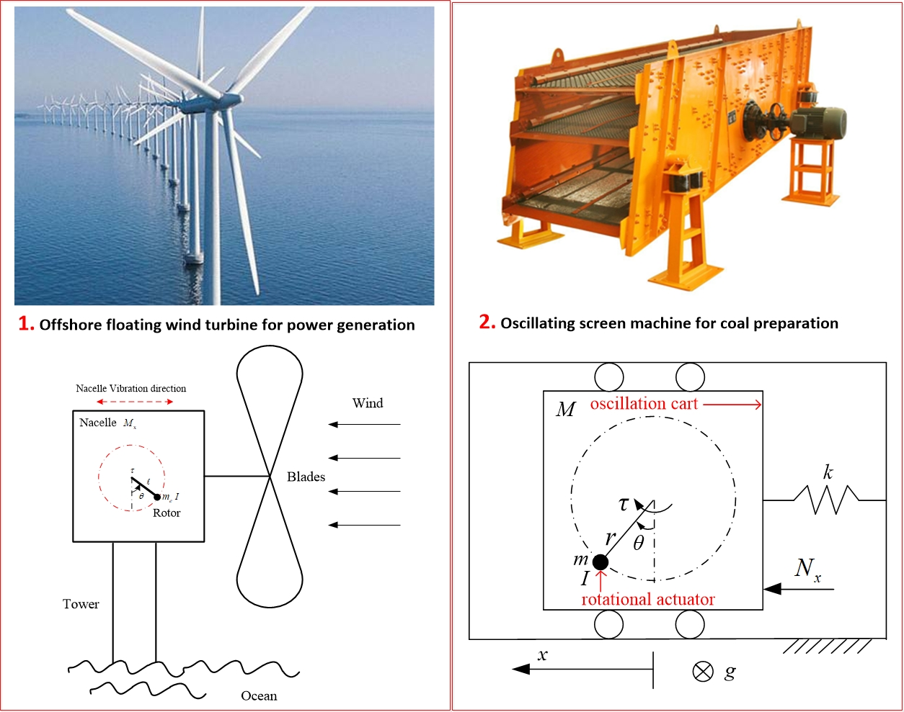
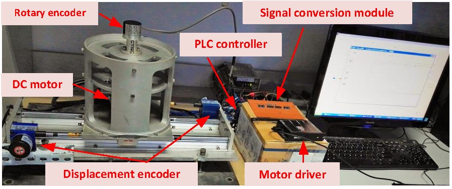

Under-actuated Machine Control

Offshore floating wind turbine exhibits plastic vibration for power generation. The similar vibration happens to the oscillating screen machine, commonly seen in the power plant’s coal preparation process. They are under-actuated phenomena. Analyzing the under-actuated mechanism, we developed under-actuated TORA (translational oscillator with rotational actuator) system to stabilize the oscillation of offshore wind turbine and solve the oscillating screen machine’s flexible control problems.
 Figure 1. The under-actuated mechanism of offshore wind turbine and screen machine
 Figure 2. Our self-developed platform of the under-actuated TORA system
Chuande Liu
Lecturer
My current research interests focus on sensory-based manipulation, robotic motion planning, AI-augmented visual servoing and under-actuated robot systems.